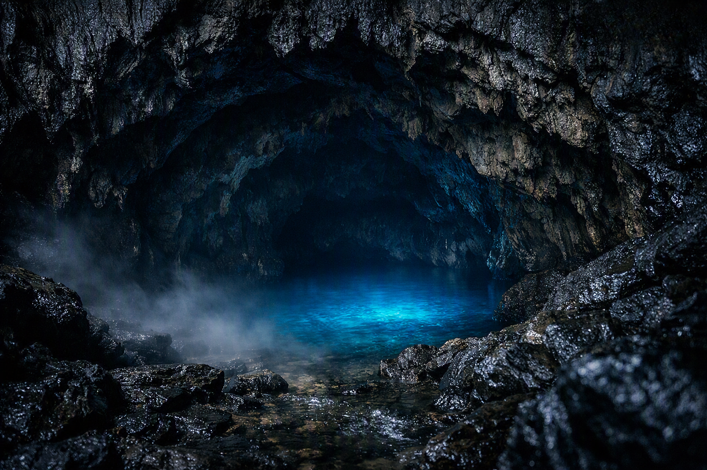
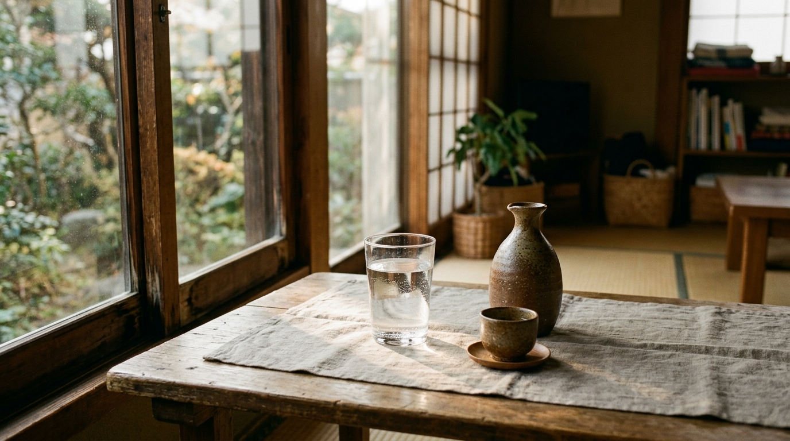
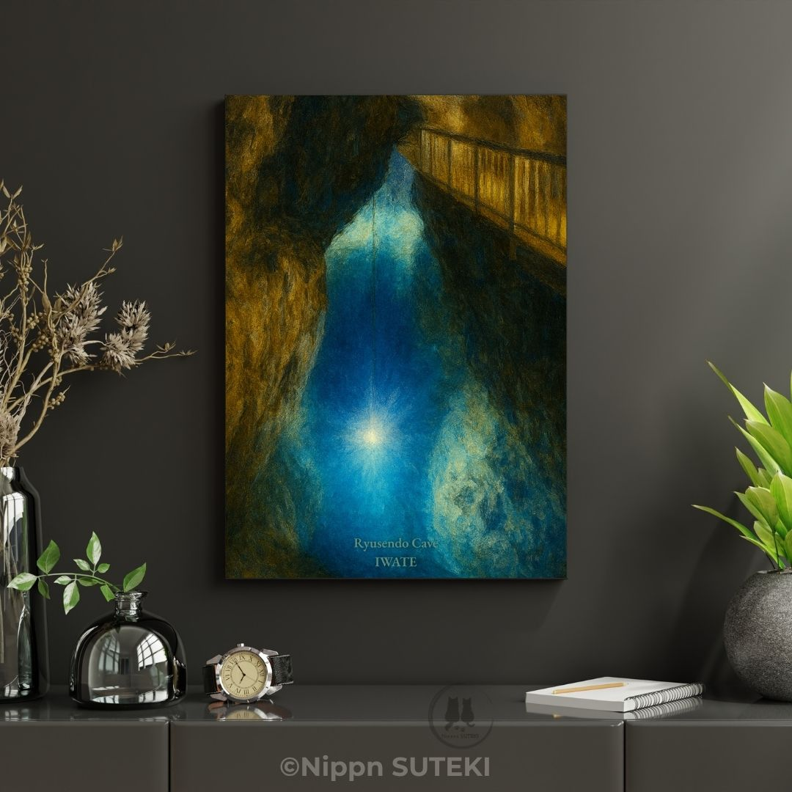

The Dragon Beneath Ryusendo: A Town's Quiet, Sacred Water
A dragon's water, poured quietly into an ordinary day
by Kiri
Hmph… welcome.
The wind outside is a little restless today, but this corner at the back of the shop stays cool and easy. I'll sit here by your feet — don't mind me. I noticed you looking at that blue poster for a while, so I came a little closer.
Do you know a place called Ryusendo, deep in Iwate Prefecture, in a town called Iwaizumi?
Most people know it simply as "the tourist spot with the beautiful blue underground lake." But what draws us in is something a little further beneath that — the presence, the weight of time, that lives in its depths.
A Shadow That Rose to Heaven, and a Water Deity's Home
According to old legend, a great dragon once burst from the darkness of this cave, carried on violent water, and ascended into the sky. The dragons of Western stories tend to hoard gold and treasure deep in their caves, threatening anyone who comes near. The dragons of this country are a little different — they govern water, and bring blessing to dry land. Which is to say, they were never something to fear. They were something to thank.
Ryusendo isn't simply a geologically rare hole in the ground. For hundreds of years, the people here have hesitated to step too far inside, and have quietly revered it as sacred ground instead. Not trying to expose everything hidden in the dark — just quietly paying respect. That kind of distance… I don't dislike it.

Where ordinary rock quietly gives way to something else.
The Heart of the Town, Flowing Through Ordinary Life
What's interesting is that the water flowing out of this sacred cave is still, even now, woven naturally into the daily life of the town.
The tap water people wake up and drink. The sake brewed at the local sake house. All of it is made with water that arrives from deep underground. It isn't something to be admired from outside, as a tourist attraction — it's the root of life here. You might call it the town's heartbeat.
People sometimes try to lock something beautiful away in a special box. But maybe the things that matter most are simply poured, quietly, into an ordinary cup of water each day.

The same water, poured into an ordinary morning.
A Transparent Miracle, at the Edge of Despair
Some of you may remember — this region was once struck by a major earthquake and a large typhoon, when roads and lifelines were cut off. While the whole town was at a loss, deep underground, clean, safe water kept flowing out, without pause.
In a world where everything else had stopped, only the water from the cave never stopped. People gathered it, drank it, and kept living. The old story of the dragon god's protection, passed down since ancient times, was never just a folktale — it was carved, quite literally, into the memory of the people living today.
"When you taste a single drop of this water, perhaps you are swallowing, at the same time, a legend of a dragon from thousands of years ago, and the strong breath of a town that survived hard times."

Available now as an art poster — a quiet blue, kept close at hand.
Not Just a Record, but a Feeling You Can Hang on a Wall
A photograph records a moment. But art, I think, holds onto the feeling you had in that moment.
Hanging this view on your wall isn't simply about hanging a pretty photo of blue water. It means that on a busy day, when your eyes happen to land on it, you'll remember the dragon that once rose from this darkness, and the quiet, unbroken thread that still runs from that depth into someone's morning cup.
You can look at it as simply a beautiful photograph of blue water, or as a depth where layers of history and prayer overlap. People say a single poster can change the mood of a room. But maybe, with this one, it's the whole world you see beyond the wall that changes.
My sister Sari would probably get excited and tell you, "It's so lovely, just buy it!" I won't push you like that. If your instinct tells you something, though — perhaps it's worth picking up.
…The tea's ready now. Let's let it cool a little first, shall we? There's no need to rush anything.